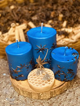

Vela de Maracujá

Esta vela muito bonita pode ser sua por:
R$21,90

Fazer velas é um processo relativamente simples, mas requer algum cuidado e os materiais adequados. Aqui está uma explicação básica de como fazer velas:
Materiais necessários:
Cera de vela (pode ser parafina, cera de abelha, cera de soja, etc.)
Pavio (preferencialmente pré-encerado)
Recipiente para a vela (pode ser um copo de vidro, latas de alumínio, formas de silicone, etc.)
Corante para velas (opcional)
Essência aromática (opcional)
Panela para derreter a cera
Colher de metal ou mexedor de cera
Termômetro (opcional, mas útil para controlar a temperatura)
Passos para fazer velas:
Prepare o recipiente: Se estiver usando recipientes de vidro ou metal, limpe-os e seque-os bem. Se estiver usando formas de silicone, elas geralmente não precisam de preparação especial. Prepare o pavio: Meça o comprimento do pavio para que ele seja um pouco mais longo que a altura do recipiente. Você pode fixar o pavio no fundo do recipiente usando uma pequena quantidade de cera derretida. Derreta a cera: Coloque a cera em uma panela adequada e aqueça em fogo baixo até que derreta completamente. Se estiver usando corante ou essência, adicione-os à cera derretida neste momento, seguindo as instruções do fabricante. Despeje a cera: Com cuidado, despeje a cera derretida no recipiente preparado. Certifique-se de que o pavio permaneça centralizado enquanto a cera esfria e solidifica. Deixe a vela esfriar: Aguarde até que a cera esfrie e solidifique completamente. Isso geralmente leva algumas horas, dependendo do tamanho da vela. Corte o pavio: Depois que a cera estiver completamente solidificada, corte o pavio para que tenha a altura desejada. Ajustes finais: Se necessário, faça ajustes finais na vela, como nivelar a superfície da cera ou limpar quaisquer respingos.

Esta vela muito bonita pode ser sua por:
R$21,90
Esta vela muito bonita pode ser sua por:
R$21,90

Esta vela muito bonita pode ser sua por:
R$21,90
Esta vela muito bonita pode ser sua por:
R$21,90

Esta vela muito bonita pode ser sua por:
R$21,90

Esta vela muito bonita pode ser sua por:
R$21,90